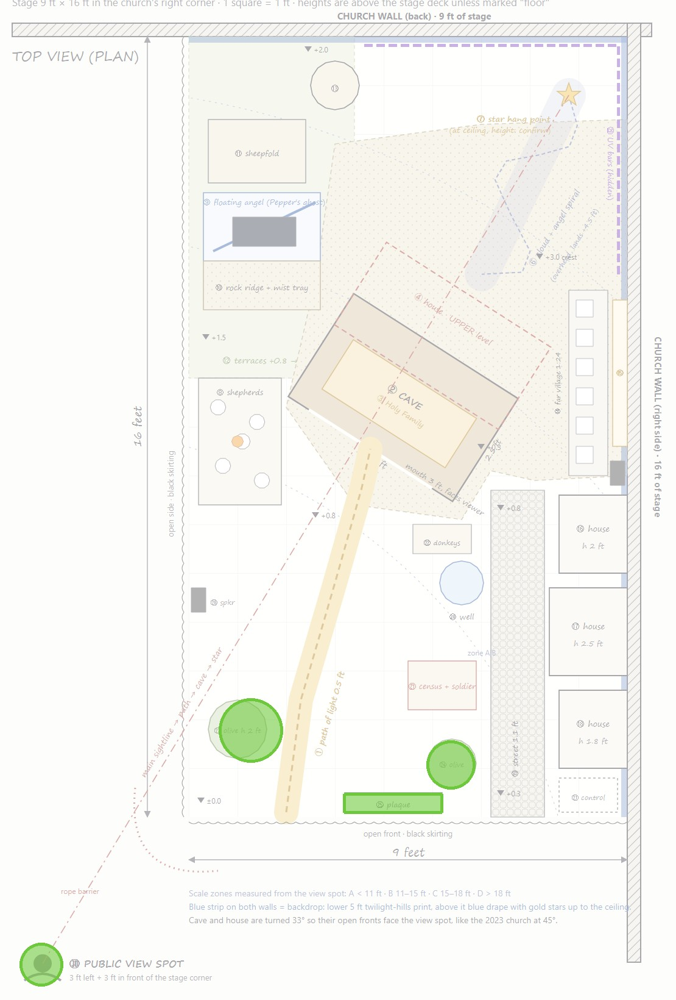

L
Foreground and view spot 23–24 olive trees, 25 "find 12 details" plaque, 30 public view spot and rope
Build window: 19 Dec → 23 Dec (olives and plaque can start earlier) About 4 person-days Easy tasks for helpers Cost: Prop-only ₹2,700 · Lean ₹3,600 · Full ₹9,500
Position and size View spot V is 3 ft left and 3 ft in front of the stage corner. Rope barrier curved 5 ft from the stage front, 4 ft clear aisle. Olive 23 at front-left (1.0, 14.2), plaque 2 × 0.4 ft at the front edge.
Where it sits 
Blueprint drawings (dimensioned) PLAN · public viewing area at the front-left corner of the stage CRIB STAGE 9 × 16 ft altar wall V rope barrier + 4 posts queue from the right-hand aisle exit toward the altar side, 4 ft clear fire extinguisher 25 plaque 3 ft V = standing spot, 3 ft left and 3 ft in front of the stage corner. 6 people at a time; single file behind the rope. SIGNAGE (A4, large type): • 'Please stand here · the best view' • 'The crib shows every 10 minutes' • 'Find 12 details' near the plaque SAFETY: • thermocol, cotton, fabric: fire-retardant • no candles; sambrani only in a closed brass holder, 2 m from the cascade • cables under a ramp or taped flat • 4 ft clear for wheelchairs at the rope KEY PLAN · where this sits in the church (assumed: altar centre, crib at the right end) sanctuary step ALTAR ALTAR WALL (front of church) centre aisle pews (congregation faces the altar) main door CRIB STAGE 9 × 16 ft VIEW 1 · public spot 3 ft left + 3 ft in front queue comes up the right-hand side VIEW 2 · from the aisle altar centre-left, crib at the right end Key plan · church size is a guess; only the stage is to scale VIEW 1 · public spot stand here, look diagonally at the corner VIEW 2 · wide shot from the aisle shows altar centre-left, crib at the far end Check on site: • is the altar really centred on this wall? • how far is the stage edge from the pews? • is the right wall the church wall? • where are the power point and the exit? Materials (₹) Item Qty Prop-only Lean Full Jute rope 15 m + 4 brass or wood posts 1 set 1,000 1,200 2,200 Floor marker, signage and printing lot 300 400 800 CO₂ extinguisher (if the church has none) 1 0 0 3,000 Sambrani brass holder (closed) 1 300 300 800 Olive trees (wire, jute, paper, dried leaves) 2 800 800 1,200 Plaque: wood + printed icons 1 300 900 1,500 Total for this block 2,700 3,600 9,500
Tools: Rope, posts, floor tape, printer, wire, jute
How to build it, in order Mark V on the floor: 3 ft left and 3 ft in front of the stage corner. Curve the rope barrier 5 ft from the stage front; keep a 4 ft clear aisle. Place the signs and the 'find 12 details' plaque. Confirm the extinguisher location and the exit with the church. Walk through with six people at V to confirm the sightlines. Make the two olive trees (wire, jute, paper, dried leaves, umber trunks) and place them as the dark framing in the front corners. Make the plaque with 12 hidden details and place it at the front edge. Before you start Confirm the extinguisher location and the exit with the church. Print the signs (A4, large type).
Check before cutting Capacity at V is six people; the queue forms single file along the right-hand aisle.Done when (tick each) Six people can stand at V with the full view. 4 ft clear aisle for wheelchairs at the rope; cables under a ramp or taped flat. Olive trees are darker and less saturated than the field behind. Extinguisher and exit are marked. Hands over to Last to place. Plaque and olives are on A at the front; the rope and signs are on the church floor.